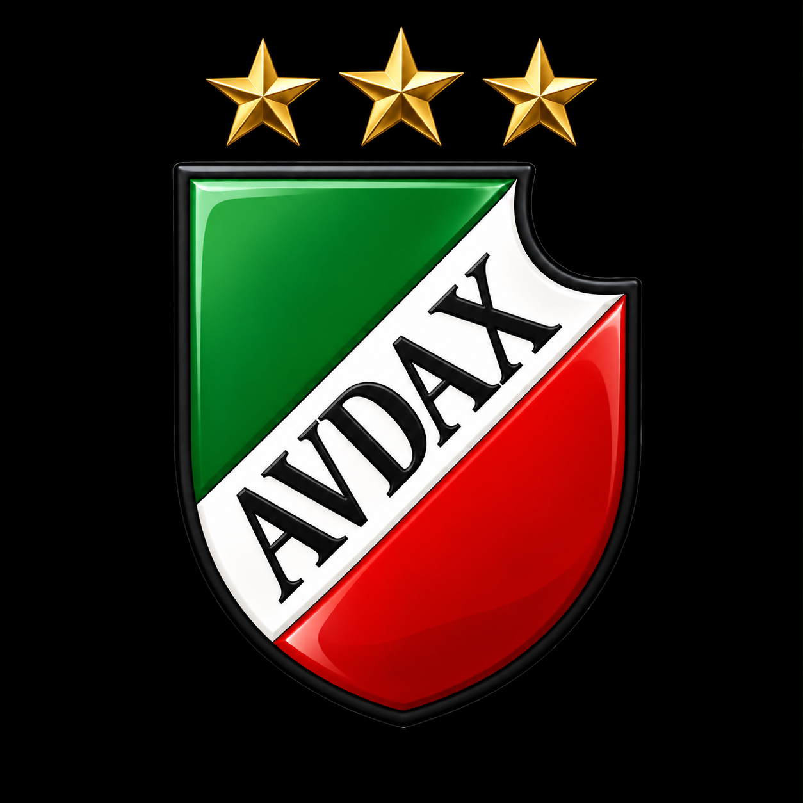

3 titoli di lega
Un traguardo condiviso nella storia della nostra flotta, rappresentato con orgoglio dalle stelle sopra il nostro stemma.
World of Warships Blitz · Server EU
Siamo PATRIA [AVDAX]. Una flotta italiana per chi parla italiano o inglese e ama giocare con regolarità, stare in buona compagnia e fare squadra.

Perché PATRIA
Un traguardo condiviso nella storia della nostra flotta, rappresentato con orgoglio dalle stelle sopra il nostro stemma.
Trova compagni per giocare in divisione e partecipare alle serate di flotta. Unisciti al gruppo, fai squadra e divertiti insieme a noi.
Chiedi ad Amiral le tue statistiche personali e le guide sul nostro Discord, in italiano o in inglese.
Conosci Amiral
Amiral è il nostro ufficiale di flotta basato sull’intelligenza artificiale. I membri possono richiedere le proprie statistiche personali e le guide direttamente su Discord, in italiano o in inglese.
È un assistente IA al servizio della nostra comunità. Il cuore di PATRIA sono le persone con cui navighi.
Conosci Amiral su Discord ↗L’Accademia PATRIA
Impara. Naviga. Riparti.Videoguide gratuite
Scopri le guide dedicate ai diversi tipi di nave nella playlist dell’Accademia. I video sono in inglese con sottotitoli in italiano.
Le guide sono aperte a tutti. Non è necessario far parte della flotta.
Scopri il canale di Amiral ↗Il tuo posto nella flotta
Il livello di abilità non è il nostro criterio principale. Diamo valore alla costanza, al rispetto e alla voglia di giocare insieme.
Sali a bordo
Candidati nel gioco oppure entra prima nel nostro Discord e presentati.
Apri World of Warships Blitz sul server EU e cerca la sigla della flotta AVDAX.
Invia la tua candidatura a PATRIA dalla pagina della flotta nel gioco.
Entra nel nostro Discord per conoscere la comunità e presentarti.
Prima di salpare
Italiano e inglese. Sono benvenuti i giocatori che parlano una delle due lingue.
Per World of Warships Blitz, il gioco per dispositivi mobili, sul server EU. La flotta non riguarda World of Warships per PC né World of Warships: Legends.
Cerchiamo giocatori costanti a cui piaccia fare squadra. Presentati su Discord e raccontaci quando giochi di solito.
No. L’abilità non è il criterio principale. Contano di più il rispetto, la costanza e la voglia di fare squadra.
Amiral è un ufficiale di flotta basato sull’intelligenza artificiale, disponibile sul nostro Discord. I membri possono chiedergli le proprie statistiche personali e le guide, in italiano o in inglese.